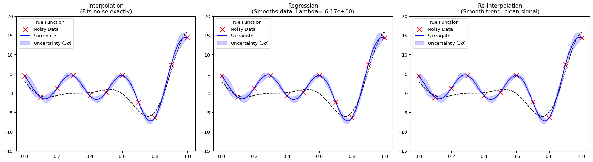

import numpy as np
import matplotlib.pyplot as plt
from spotoptim.surrogate import Kriging
# Define a function with noise
def true_function(x):
return (x * 6 - 2)**2 * np.sin(x * 12 - 4)
np.random.seed(42)
X = np.linspace(0, 1, 11).reshape(-1, 1)
noise = np.random.normal(0, 1.0, X.shape)
y = true_function(X).flatten() + noise.flatten() * 3.0 # Add significant noise
X_plot = np.linspace(0, 1, 100).reshape(-1, 1)
y_true = true_function(X_plot)32 Kriging in SpotOptim: The Forrester Implementation
33 Introduction
The Kriging surrogate model in spotoptim is an implementation of the methods described in the classic text “Engineering Design via Surrogate Modelling” by Forrester, Sóbester, and Keane (2008). This tutorial explains the mathematical foundations of the implementation and demonstrates how to use the different fitting methods available in the library. The implementation has been validated against the original Matlab code provided with the book (likelihood.m, pred.m, etc.).
34 1. The Core Kriging Model (Section 2.4)
Kriging, or Gaussian Process Regression, treats the response \(y(\mathbf{x})\) as a realization of a stochastic process:
\[ Y(\mathbf{x}) = \mu + Z(\mathbf{x}) \]
where \(\mu\) is the mean (often modeled as a constant in Ordinary Kriging) and \(Z(\mathbf{x})\) is a Gaussian process with zero mean and covariance:
\[ Cov(Z(\mathbf{x}^{(i)}), Z(\mathbf{x}^{(l)})) = \sigma^2 \Psi(\mathbf{x}^{(i)}, \mathbf{x}^{(l)}) \]
34.1 Correlation Function
We use the Gaussian correlation function (Eq 2.4 in the book), which is infinitely differentiable and assumes a smooth underlying response:
\[ \Psi(\mathbf{x}^{(i)}, \mathbf{x}^{(l)}) = \exp\left(-\sum_{j=1}^{k} \theta_j |x_j^{(i)} - x_j^{(l)}|^{p_j}\right) \]
In spotoptim, we typically set \(p_j = 2\) (Gaussian) and optimize \(\theta_j\) (length-scales).
34.2 Training: Concentrated Log-Likelihood
To fit the model, we maximize the Concentrated Log-Likelihood (Eq 2.30/2.33) with respect to the hyperparameters \(\theta\):
\[ \ln(L) \approx -\frac{n}{2} \ln(\hat{\sigma}^2) - \frac{1}{2} \ln|\Psi| \]
where \(\hat{\sigma}^2\) is the estimated variance (Eq 2.28). This matches the implementation in the book’s likelihood.m.
34.3 Prediction
The prediction at a new point \(\mathbf{x}\) is given by (Eq 2.15):
\[ \hat{y}(\mathbf{x}) = \hat{\mu} + \psi^T \Psi^{-1} (\mathbf{y} - \mathbf{1}\hat{\mu}) \]
where \(\psi\) is the correlation vector between the new point and the training points. This matches pred.m.
35 2. Handling Noisy Data
Real-world data is often noisy. Forrester et al. (Section 6) describe three approaches to handle this, all available in spotoptim via the method argument.
35.1 A. Interpolation (method="interpolation")
This is the standard Kriging formulation. It assumes no noise in the data.
- The model passes exactly through the training points.
- A very small “nugget” (noise) is added only for numerical stability of the matrix inversion.
35.2 B. Regression (method="regression")
Described in Section 6.2 (“Regression Kriging”), this method assumes the observations contain noise \(\epsilon\):
\[ y = \mu + Z(\mathbf{x}) + \epsilon \]
We introduce a regularization parameter \(\lambda\) (Lambda) to the diagonal of the correlation matrix:
\[ \mathbf{C} = \Psi + \Psi^T + (1 + \lambda)\mathbf{I} \]
Both \(\theta\) and \(\lambda\) are optimized simultaneously. The resulting surrogate:
- Does not pass through the training points (it smooths them).
- Is suitable for noisy objective functions.
35.3 C. Re-interpolation (method="reinterpolation")
Described in Section 6.3, this is a hybrid approach.
- We fit the hyperparameters (\(\theta\) and \(\lambda\)) using the Regression method to learn the noise level.
- For prediction, we use the “noise-free” correlation matrix (removing \(\lambda\)) to predict the underlying smooth trend.
This “re-interpolates” the regression model, providing a predictor that typically has better error properties for design optimization than pure regression.
36 3. Examples
We will verify these methods with a simple 1D example.
36.1 Setup
36.2 Comparisons
We will fit three models and compare them.
# 1. Interpolation (Forces fit through noisy points)
model_interp = Kriging(method="interpolation", seed=42)
model_interp.fit(X, y)
y_interp, s_interp = model_interp.predict(X_plot, return_std=True)
# 2. Regression (Smooths the data by learning Lambda)
model_reg = Kriging(method="regression", seed=42, minLambda=-1, maxLambda=10)
model_reg.fit(X, y)
y_reg, s_reg = model_reg.predict(X_plot, return_std=True)
# 3. Re-interpolation (Smooth trend based on regression parameters)
model_reinterp = Kriging(method="reinterpolation", seed=42)
model_reinterp.fit(X, y)
y_reinterp, s_reinterp = model_reinterp.predict(X_plot, return_std=True)36.3 Visualization
fig, axes = plt.subplots(1, 3, figsize=(18, 5))
def plot_model(ax, title, y_pred, std):
ax.plot(X_plot, y_true, 'k--', label="True Function")
ax.scatter(X, y, c='r', marker='x', s=100, label="Noisy Data")
ax.plot(X_plot, y_pred, 'b-', label="Surrogate")
ax.fill_between(X_plot.flatten(),
y_pred - 3*std,
y_pred + 3*std,
color='b', alpha=0.2, label="Uncertainty (3$\\sigma$)")
ax.set_title(title)
ax.legend()
ax.set_ylim(-15, 20)
plot_model(axes[0], "Interpolation\n(Fits noise exactly)", y_interp, s_interp)
plot_model(axes[1], f"Regression\n(Smooths data. Lambda={model_reg.Lambda_:.2e})", y_reg, s_reg)
plot_model(axes[2], "Re-interpolation\n(Smooth trend, clean signal)", y_reinterp, s_reinterp)
plt.tight_layout()
plt.show()
36.3.1 Interpretation
- Interpolation: Wiggles aggressively to hit every noisy point. This is “overfitting” the noise.
- Regression: Produces a much smoother curve that does not hit the points. It has correctly identified that the data is noisy (optimized \(\lambda > 0\)).
- Re-interpolation: Similar to regression in shape, but mathematically grounded in predicting the process rather than the data.
37 4. Infill Criteria
The book also describes “Infill Criteria” (Section 3) for deciding where to sample next. This is implemented in SpotOptim itself (not the surrogate class). When you use SpotOptim(..., acquisition="ei"), you are using the Expected Improvement criterion described in Section 3.2.1 of the book.
from spotoptim import SpotOptim
# Use Kriging with EI
optimizer = SpotOptim(
fun=lambda x: np.sum(x**2),
bounds=[(-5, 5)],
surrogate=model_reinterp, # Pass your customized Kriging model
acquisition="ei", # Expected Improvement
max_iter=20
)38 References
- Forrester, A., Sóbester, A., & Keane, A. (2008). Engineering Design via Surrogate Modelling: A Practical Guide. Wiley.
- SpotOptim Source Code:
spotoptim/surrogate/kriging.py(Validated against book’s Matlab code).
38.1 Jupyter Notebook
Note
- The Jupyter-Notebook of this chapter is available on GitHub in the Sequential Parameter Optimization Cookbook Repository